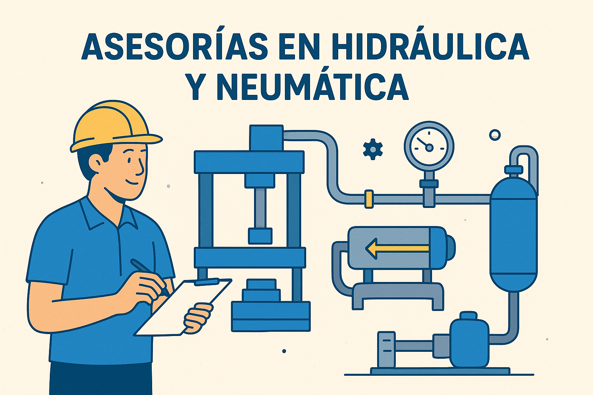

Diseño de unidades hidráulicas
Diseñamos unidades hidráulicas personalizadas para optimizar el rendimiento y la eficiencia del sistema que necesites.
- Levantamiento de piezas o components necesarios
- Cotizacion detallada de todo lo necesario.
- Construcción de la unidad acorde a tus necesidades.

Refacciones y mantenimiento de montacargas
Servicios especializados para mantener tus montacargas en óptimas condiciones y prolongar su vida útil.
- Montaje mecánico e hidráulico
- Pruebas de presión y funcionamiento
- Capacitación inicial al personal

Visita técnica en planta
Podemos realizar visitas técnicas para evaluar y optimizar tus sistemas hidráulicos y neumáticos.
- Estudios de viabilidad
- Asesoría técnica especializada
- Informes detallados con recomendaciones

Asesorías y capacitación técnica
Cursos prácticos para operación, mantenimiento y seguridad en equipos hidráulicos y neumáticos.
- Talleres prácticos
- Programas en sitio o remoto
- Material didáctico y certificación

Desarrollo e integración de equipos
Podemos diseñar e integrar equipos ya sea hidraulico, neumatico o electrico para el control de tu sistema.
- Diseño personalizado
- Integración de sistemas
- Automatización y/o control

Reparación de bombas
Servicio especializado en la reparación y mantenimiento de bombas hidráulicas para asegurar su óptimo funcionamiento.
- Diagnóstico y reparación
- Mantenimiento preventivo
- Repuestos originales y garantía

Mantenimiento de cilindros
Servicio especializado en la reparación y mantenimiento de cilindros hidráulicos para asegurar su óptimo funcionamiento.
- Diagnóstico y reparación
- Mantenimiento preventivo
- Repuestos originales y garantía

Refacciones en general
Ademas de todo esto proveemos una amplia gama de refacciones aqui en Reser Industrial para equipos hidráulicos y neumáticos, garantizando calidad y compatibilidad.


.png)